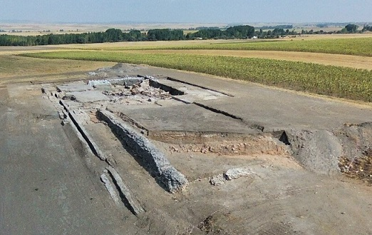

|
SEGOVIA ROMANA
- En Bernardos en el Cerro de la Virgen del Castillo se halla el castro de la Edad del Bronce, de la que se conservan grabados rupestres. Hacia finales del siglo IV o comienzos del siglo V se refugiaron en él los habitantes que abandonaron las villas romanas durante la guerra civil entre el Emperador Teodosio y sus oponentes. Se construye una muralla con lajas de pizarra y cuarcita dispuestas en seco. Durante la época visigoda el castro siguió ocupado. En este momento se rehizo la muralla y se reforzó exteriormente. - En Coca se halla el Edificio Romano de los Cinco Caños del siglo I - II. De planta alargada con ábsides cubiertos por bóvedas y paredes adornadas con estucos pintados. - En Aguilafuente se halla la reconstrucción de la villa romana de Santa Lucia. El Aula Arqueológica es un centro de interpretación de la villa romana de Santa Lucía, construida en el siglo IV, a dos Kilómetros de Aguilafuente. A lo largo de las diferentes salas, el visitante va descubriendo, como era la villa. También se halló una necrópolis visigoda de los siglos VI y VII. - En Paradinas se halla el Centro de Interpretación Arqueológica de la Villa Romana. Se pueden ver de forma didáctica, los restos del asentamiento romano de Paradinas, ubicado bajo el actual núcleo de población. En la campaña de 2021, se descubre un nuevo mosaico. - En Otero de Herreros, con la última fase de excavaciones, ha permitido descubrir que los romanos emplearon dos tipos de horno en Cerro de los Almadenes para obtener el cobre. - En Duratón, se localiza el el yacimiento de la ciudad romana de Confluenta, en el asentamiento conocido de Los Mercados. Con las campañas arqueológicas están apareciendo nuevos restos arquitectónicos de época romana, que se añaden a los ya descubiertos. Pavimentos mosaicos, termas con sus seis estancias y una gran sala semicircular. Todo indica que sería un barrio residencial en el que además de infraestructuras típicas como viales o cloacas, debería de haber "importantes edificios públicos". Se trata de la única ciudad romana de la provincia potencialmente explorable al completo, ya que no fue ocupada con posterioridad. Este enclave sigue desvelando sus misterios y se consolida como una especie de guía para conocer la evolución y el desarrollo urbanístico que tuvo lugar entre el siglo I a.e.c al VII. Foto: www.confloenta.es
 - En Nava de la Asunción destaca la villa romana de Matabuey. Se ha hallado la zona termal. Ubicada en el eje de comunicaciones entre las antiguas ciudades de Cauca y Segovia entre los siglos I al V. Fue asolada por un incendio.
|